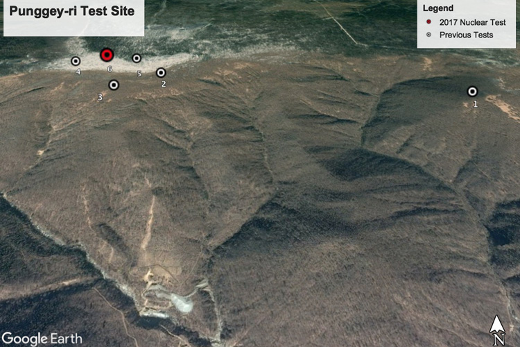
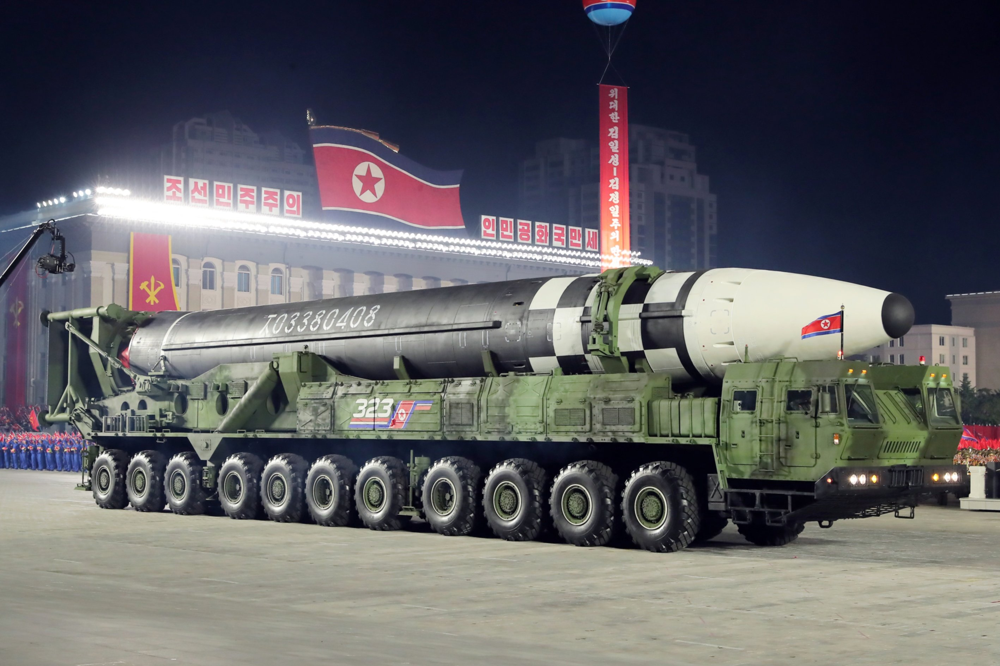

We are comitted to making sure that our nation is safe and secure and that our citizens our loyal to our eternal suppreme leaders. Here you can see some of the attractions accommodations, and services we offer.
Prison Camps
Here in the DPRK, we offer the world's finest brutal prison camps, complete with torture for any form of disobedience, disrespect, or any other form of transgression. From animal-sized cages for people to whippings for even the slightest offense, we have everything you need to imprison your enemies without anyone knowing where they went! We also have the single largest prison camp in the entire world!
Here you can see drawings of what our camps are like from former prisoners who were manipulated by the West and managed to escape.
Some of the services our prisons offer:
Naked, night-long beatings for any escape
Murdering of foreign nationals arrested as teenagers, some as young as 15 when they were arrested
Nuclear Weapons
Since the 1980s, we have been comitted to developing the world's best nuclear program capable of yielding detonation forces unlike anything mandkind has ever seen. Our first glorious launch took place on October 9, 2006 and while we had been working on it before, that wonderful day heralded the arrival of a new golden age for our great nation. Since then, we have worked tirelessly, conducting 6 more nuclear tests.
 Here you can see the sites of our 6 nuclear tests, with the one from 2017 being marked in red as it has been our biggest and most powerful to date, as well as the most recent.
Nuclear test dates and times:
October 9, 2006, 10:35:27 KST
May 25, 2009, 09:54:43 KST
February 12, 2013, 11:57:51 KST
January 6, 2016, 10:30:01 KST
September 9, 2016, 09:30:01
September 3, 2017, 12:30:01.940 KST
Truck-Launched ICBMs & the WS51200
We also have a very large and not at all for show arsenal of nuclear missiles that we can launch from trucks to destroy any and all enemies. Those missiles are launched from several placed, but one of the most effective deployment methods is truck-launched missiles. Truck-launched missiles can be launched from anywhere, and our ICBM-carrying trucks can reach anywhere in the entire country.
The vehicle we use to launch our intercontinental ballistic missiles (ICBM) is the WS51200. This is a truck capable of carrying loads of up to 80 tons and has a range of 1,000 km on a single fuel load, meaning that it can reach nearly anywhere in the entire country on a single load of fuel while carrying a nuclear-tipped ICBM. The missile we equip these trucks with is the gargantuan Hwasong-17 nuclear-tipped ICBM, capable of hitting anywhere in the U.S.A., that we have shown real versions of at parades that are definitely not fake because they don't roll around on the trucks and fake ones would roll around on the trucks but these are real nukes so they totally don't.
 This image shows a WS51200 carrying a Hwasong-17 nuclear-tipped ICBM at a parade before dawn in February of 2022.